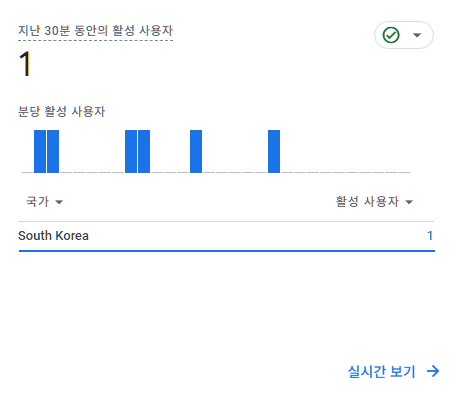
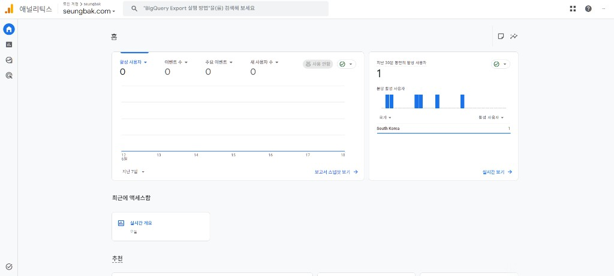

드디어 첫 방문자! GA4에 1이 찍힌 날
사이드 프로젝트 8시간의 기록
"분당 활성 사용자: 1명, 국가: South Korea"
이 한 줄이 이렇게 감동적일 줄 몰랐다.
사이드 프로젝트의 첫 순간
월급쟁이 부동산 공부 유튜버로 살면서, 항상 머릿속에 있던 생각이 있었다. "내 사이트, 내 도구, 내 콘텐츠로 작은 수익이라도 만들어보고 싶다."
그래서 시작한 사이드 프로젝트가 seungbak.com이다. 부동산 지도, 연봉 계산기, 퇴직금 계산기, D-day 계산기... 직장인이 쓸만한 도구들을 하나씩 만들어왔다.
근데 오늘, 진짜 의미 있는 순간이 왔다.
오늘 한 일
오늘 하루는 진짜 미친 진도였다. 회사 일 사이사이, 그리고 퇴근 후까지 8시간 동안 달렸다.
1. Google Analytics 4 설치 (오전)
내 사이트에 GA4를 설치했다. 측정 ID G-Y7SC73P9JW를 25개 HTML 파일에 모두 삽입.
처음엔 "이게 무슨 의미가 있나" 싶었다. 어차피 방문자도 0이었으니까.
하지만 데이터 없이는 아무것도 개선할 수 없다는 걸 알기에 일단 깔았다.
2. Search Console 등록 (오전)
구글에서 검색되려면 색인부터 되어야 한다. Sitemap 24개 페이지 제출 완료.
3. 부동산 지도 커스텀 이벤트 추적 (오후)
내 사이트의 핵심 기능인 부동산 지도에 GA4 커스텀 이벤트 6개를 추가했다.
marker_click: 아파트 마커 클릭dong_select: 동 선택district_select: 구 선택deal_type_toggle: 매매/전세 토글filter_change: 필터 변경search_result_click: 검색 결과 클릭
이제 사용자가 뭘 보는지, 어떻게 행동하는지 모두 추적된다.
4. 강남3구 → 서울 25개구 확장 (저녁)
원래 강남구만 지원하던 부동산 지도를, 오늘 서울 25개구 전체로 확장했다. 지난 글에서 "다음 주 25구 확장"이라고 썼는데, 오늘 바로 해버렸다.
숫자로 보는 확장:
- 단지: 740개 → 7,588개 (10배)
- 거래: 19만 건 → 28만 건
- 지오코딩 성공률: 99.6%
5. 통합 검색 기능 (저녁)
"반포자이" 검색하면, 강남구를 보고 있어도 자동으로 서초구로 전환되면서 단지를 찾아주는 기능을 만들었다. 호갱노노나 네이버 부동산 쓰면 당연하게 느껴지는 그 기능이다.
6. 초기 로딩 최적화 (저녁)
25개구로 확장하니 초기 로딩이 10초가 넘어갔다. 이러면 사용자가 다 도망간다. "강남구 우선 로드 + 백그라운드 인덱스" 전략으로 763ms까지 단축. 13.5배 빨라졌다.
그리고 GA4를 열었더니...
이 모든 작업이 끝나고, GA4 대시보드를 열었다.
"지난 30분 동안의 활성 사용자: 1"

작은 숫자다. 분당 활성 사용자 그래프에 막대 4개만 보인다.
근데 이게 왜 이렇게 감동적인지 모르겠다.

어쩌면 그게 나 자신일 수도 있고, 진짜 누군가 우연히 들어온 첫 방문자일 수도 있다.
중요한 건 "0이 아니라 1"이라는 점이다.
0과 1의 차이
소프트웨어 개발하는 사람들은 안다. 0과 1의 차이는 무한대다.
- 0이면 아무도 안 본다는 뜻
- 1이면 누군가는 본다는 뜻
이 작은 1이 10이 되고, 100이 되고, 1,000이 되는 순간을 보고 싶다.
앞으로의 계획
오늘 작업한 기반을 바탕으로:
단기 (1~2주)
- 트래픽 모니터링
- 콘텐츠 보강 (블로그 글 추가)
- 메타 태그 최적화
중기 (1개월)
- 애드센스 신청
- 핵심 키워드로 검색 노출 확보
장기 (3~6개월)
- 서울 → 수도권 확장
- 5년치 데이터 추가
- 진짜 "쓸만한" 부동산 도구로 자리잡기
같은 길을 걷는 사람들에게
직장인으로 살면서 사이드 프로젝트를 하는 건 쉽지 않다.
회사 일 하느라 피곤하고, 가족이랑 시간 보내야 하고, 운동도 해야 한다.
근데 매일 30분, 1시간씩 쌓아가면 뭔가는 만들어진다.
오늘 GA4에 찍힌 "1"처럼.
그 작은 1이 오늘의 나에게는 가장 큰 응원이었다.
오늘의 한 줄 정리:
"0이 1이 되는 순간, 모든 게 시작된다."
다음 글에서는 애드센스 신청 결과를 공유할 예정입니다. 응원해주세요! 🚀